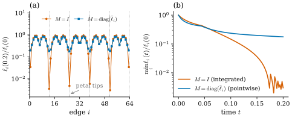
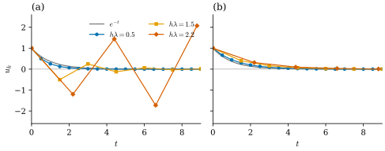
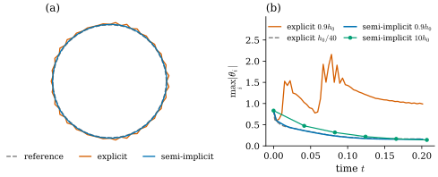
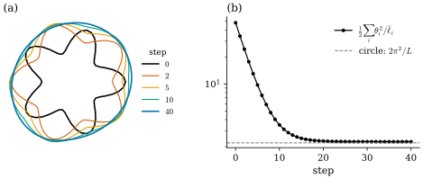

37.6 Curvature Flows on Curves
Goals
- gradient flow를 정의하고, 같은 energy라도 inner product를 바꾸면 flow가 바뀐다는 것을 discrete length의 두 flow로 설명할 수 있다.
- explicit(forward)과 implicit(backward) Euler step의 안정 조건을 model problem과 linear gradient flow에서 증명하고, discrete length flow의 semi-implicit step이 길이를 늘리지 않음을 증명할 수 있다.
- elastic energy와 elastic flow를 정의하고, edge length를 정확히 지키는 isometric elastic flow를 Section 37.4의 복원으로 구현할 수 있다.
- elastic rod, knot, repulsive curve, smoke ring 같은 응용에서 이 절의 생각이 어디에 쓰이는지 말할 수 있다.
Prerequisites
- Chapter 32: first variation of length Proposition 32.2.3, length gradient Proposition 32.3.6, curve shortening flow Definition 32.4.1, discrete curve shortening flow Definition 32.4.5와 Proposition 32.4.6–32.4.9.
- Section 37.4: fundamental theorem과 closing condition Theorem 37.4.7, 복원 (37.4.3), difference matrix \(D\) (37.4.1).
- linear algebra: symmetric matrix의 spectral theorem, positive definite matrix(Chapter 1 수준).
Motivation
Section 37.5까지는 곡선 하나를 고정해 놓고 그 기하를 보았다. 이제 곡선을 움직인다. Chapter 32는 curve shortening flow를 네 discrete curvature로 돌려 보았는데(Definition 32.4.5), 그때 두 가지 문제가 남았다. 첫째, integrated curvature로 만든 flow에서는 vertex마다 사실상 다른 time step \(h\bar\ell_i\)를 쓰게 되고, 오래 돌리면 짧은 edge가 점점 더 짧아질 수 있다(Proposition 32.4.7 뒤의 설명). 이 절의 계산으로는 vertex 64개의 flower 다각형을 아주 작은 step으로 움직여도 시각 \(t = 0.2\)에 가장 짧은 edge가 처음 길이의 \(0.3\%\)로 줄어든다(Figure 37.6.1). 둘째, forward Euler는 time step이 크면 불안정해진다(Section 32.4 끝).
두 문제는 서로 다른 선택에서 온다. 앞의 것은 “gradient를 어떤 inner product로 잡는가”이고, 뒤의 것은 “시간을 어떻게 이산화하는가”이다. 이 절은 둘을 분리해서 다룬다. 먼저 gradient flow를 정의하고, 그다음 explicit과 implicit step을 비교한다. 마지막으로 길이 대신 휘는 정도를 줄이는 elastic flow를 보고, Section 37.4의 복원을 이용해 edge length를 정확히 지키는 flow를 만든다.
Gradient Flows and the Choice of Inner Product
유한차원에서 시작하자. 다각형의 vertex 위치를 하나의 vector \(x \in \R^N\)(\(N = 2n\) 또는 \(3n\))로 쌓고, energy \(E\colon \R^N \to \R\)가 매끄럽다고 하자. Euclidean gradient \(\nabla E(x)\)는 \(dE_x(v) = \inner{\nabla E(x)}{v}\)인 vector다. 그런데 inner product를 바꾸면 gradient도 바뀐다.
Definition 37.6.1 (gradient flow). \(U \subseteq \R^N\)이 열린집합이고 \(E\colon U \to \R\)가 매끄러우며, 각 \(x \in U\)에 symmetric positive definite matrix \(M(x)\)가 \(x\)에 대해 매끄럽게 주어졌다고 하자. \(M(x)\)에 대한 gradient를
로 정하고, \(x'(t) = -\nabla_M E(x(t))\)를 만족하는 곡선 \(x(t)\)를 \(M\)에 대한 \(E\)의 gradient flow(기울기 흐름)라 한다.
\(M = I_N\)이면 보통의 gradient descent다. \(M\)은 “어느 방향으로 움직이는 것이 얼마나 비싼가”를 정한다. 같은 energy라도 비싼 방향으로는 덜 움직인다. smooth curve에서는 \(x\)가 곡선 전체이고, inner product는 곡선 위의 \(L^2\) inner product \(\int\inner{\eta}{\zeta}\,ds\)다. Proposition 32.2.3이 보인 대로 길이의 \(L^2\) gradient는 \(-\kappa_s\mathbf{n}_s\)이고, 따라서 curve shortening flow \(\partial_t\gamma = \kappa_s\mathbf{n}_s\)(Definition 32.4.1)는 길이의 \(L^2\) gradient flow다. 이 절에서는 무한차원의 gradient를 정의하지 않고 이 대응만 쓴다.
Proposition 37.6.2 (energy decreases along a gradient flow). gradient flow \(x(t)\)에서
이고, 등호는 \(\nabla E(x(t)) = 0\)일 때뿐이다.
Proof. chain rule과 (37.6.1)에서 \(\tfrac{d}{dt}E(x) = dE_x(x') = \nabla_M E^{\mathsf T}M x'\) \(= -\nabla_M E^{\mathsf T}M\nabla_M E\)이다. \(\nabla_M E = M^{-1}\nabla E\)를 넣으면 둘째 꼴이 되고, \(M^{-1}\)이 positive definite이므로 \(0\) 이하이며 \(\nabla E = 0\)일 때만 \(0\)이다.
Example 37.6.3 (two gradient flows of discrete length). closed plane polygon의 길이 \(L(x) = \sum_i\ell_i\)에서 Proposition 32.3.6은 \(\nabla_{\gamma_i}L = -\kappa^B_i\mathbf{n}_i\)이다. (a) \(M = I_N\)이면 gradient flow는 \(\gamma_i' = \kappa^B_i\mathbf{n}_i\)이다. 이것은 Chapter 32의 B에 대한 discrete curve shortening flow((32.4.5))의 시간 연속판이다. \(\kappa^B_i\)는 integrated 값(약 \(\bar\ell_i\kappa_s\))이므로 vertex \(i\)는 smooth flow 속도의 약 \(\bar\ell_i\)배로 움직인다. 곧 vertex마다 시간이 다른 빠르기로 흐르고, 그 빠르기를 sampling이 정한다. (b) \(M = \diag(\bar\ell_i) \otimes I_2\)(vertex \(i\)의 두 성분에 무게 \(\bar\ell_i\))이면 gradient flow는 \(\gamma_i' = \kappa^B_i\mathbf{n}_i/\bar\ell_i\)이고, 오른쪽은 pointwise 값이라 smooth의 \(\kappa_s\mathbf{n}_s\)로 수렴한다(Proposition 32.3.10). 이 \(M\)은 smooth의 \(L^2\) inner product \(\int\inner{\eta}{\zeta}\,ds\)를 vertex마다의 조각 길이로 옮긴 것이다. \(M\)이 \(x\)에 따라 바뀌는 것이 Definition 37.6.1에서 \(M(x)\)를 허용한 이유다.

Figure 37.6.1의 (a)에서 먼저 두 다각형의 모양을 비교해 보자. 파란 다각형은 거의 원이고, 주홍 다각형은 조금 크고 덜 둥글다. 다음으로 점(vertex)을 보자. 처음 sampling이 고르지 않았으므로 두 다각형 모두 edge 길이가 고르지 않지만, 주홍 다각형에서는 꽃잎 끝이 있던 다섯 방향에서 이웃한 점이 거의 하나로 겹친다. Example 37.6.3(a)에서 보았듯 \(M = I\)이면 vertex마다 시간이 \(\bar\ell_i\)에 비례하는 빠르기로 흐르므로, 이 flow는 curve shortening flow를 이산화한 것이 아니라 sampling에 따라 곳마다 다른 빠르기로 돌린 것이다. 그 결과가 덜 둥근 모양과 무너지는 edge다(edge가 무너지는 자세한 과정은 여기서 분석하지 않는다). (b)를 보면 두 곡선은 \(t \approx 0.05\)까지 비슷하고, 그 뒤로 주홍만 계속 떨어진다. 주홍 곡선이 끝에서 흔들리는 것은 edge가 너무 짧아져 고정된 time step이 상대적으로 커진 탓이다(다음 소절).
gradient flow를 이산화하는 길은 둘이다 [CMU-DDG L11]. smooth gradient를 유도한 뒤 그 식을 이산화하거나, energy를 먼저 이산화한 뒤 그 gradient를 취한다. 두 길은 일반적으로 다른 algorithm을 준다. 길이에서 보면 smooth의 \(\kappa_s\mathbf{n}_s\)를 turning angle로 이산화하면 \(\kappa^A_i\mathbf{n}_i\)가 되고, discrete 길이의 gradient를 취하면 \(\kappa^B_i\mathbf{n}_i\)가 된다. 위의 예는 둘째 길을 택하더라도 inner product라는 선택이 하나 더 남는다는 것을 보여 준다.
Explicit and Implicit Time Steps
gradient flow를 계산하려면 시간도 이산화해야 한다. time step을 \(h \gt 0\)이라 할 때 두 가장 단순한 방법은
이다. 앞의 것이 forward Euler method(전진 오일러 방법, Chapter 32가 쓴 것)이고, 뒤의 것이 backward Euler method(후진 오일러 방법)다. explicit step은 지금의 gradient로 한 걸음 가고, implicit step은 “도착점의 gradient로 한 걸음 왔다”는 방정식을 \(x^{k+1}\)에 대해 푼다. implicit step은 매번 방정식을 풀어야 하므로 비싸지만, 다음 model problem이 그 대가로 무엇을 얻는지 보여 준다.
Proposition 37.6.4 (the model problem). \(\lambda \gt 0\)이고 \(E(u) = \tfrac12\lambda u^2\)(\(u \in \R\), \(M = 1\))이라 하자. gradient flow는 \(u' = -\lambda u\), 곧 \(u(t) = e^{-\lambda t}u_0\)이다. (a) explicit step은 \(u_k = (1 - h\lambda)^ku_0\)이다. \(h \lt 2/\lambda\)이면 \(u_k \to 0\), \(h = 2/\lambda\)이면 \(\abs{u_k} = \abs{u_0}\), \(h \gt 2/\lambda\)이면(\(u_0 \neq 0\)) \(\abs{u_k} \to \infty\)이다. \(1/\lambda \lt h\)이면 \(u_k\)의 부호가 매번 바뀐다. (b) implicit step은 \(u_k = u_0/(1 + h\lambda)^k\)이고, 모든 \(h \gt 0\)에서 부호를 바꾸지 않고 단조롭게 \(0\)으로 간다.
Proof. (a) \(u_{k+1} = u_k - h\lambda u_k = (1 - h\lambda)u_k\)이므로 귀납법으로 \(u_k = (1 - h\lambda)^ku_0\)이다. \(\abs{1 - h\lambda} \lt 1\)은 \(0 \lt h\lambda \lt 2\)와 같고, \(1 - h\lambda \lt 0\)은 \(h\lambda \gt 1\)과 같다. (b) \(u_{k+1} = u_k - h\lambda u_{k+1}\)을 풀면 \(u_{k+1} = u_k/(1 + h\lambda)\)이고 \(0 \lt 1/(1 + h\lambda) \lt 1\)이다.

Figure 37.6.2의 (a)를 보면 explicit step의 문제는 정확도가 아니라 안정성이다. \(h\lambda = 2.2\)이면 해가 \(0\)으로 줄어야 하는데 진폭이 오히려 커진다. (b)의 implicit step은 큰 step에서 정확하지 않지만(\(h\lambda = 2.2\)의 마름모는 회색 곡선보다 위에 있다) 결코 폭주하지 않는다. 같은 일이 여러 변수에서 일어난다.
Proposition 37.6.5 (linear gradient flows). \(K\)가 symmetric positive semidefinite, \(M\)이 symmetric positive definite인 \(N \times N\) 행렬이고 \(E(x) = \tfrac12x^{\mathsf T}Kx\)라 하자. \(M^{-1}K\)의 eigenvalue는 모두 실수이고 \(0\) 이상이다. 가장 큰 것을 \(\lambda_{\max}\)라 하자. (a) explicit step \(x^{k+1} = (I_N - hM^{-1}K)x^k\)가 모든 처음 값에서 유계일 필요충분조건은 \(h\lambda_{\max} \le 2\)이다. (b) implicit step \((M + hK)x^{k+1} = Mx^k\)는 모든 \(h \gt 0\)에서 풀리고, \(E(x^{k+1}) \le E(x^k)\)이다.
Proof idea: \(y = M^{1/2}x\)로 좌표를 바꾸면 \(M\)이 사라지고 symmetric matrix \(A = M^{-1/2}KM^{-1/2}\) 하나가 남는다. 그 eigenvector 방향마다 model problem이다.
Proof. \(M\)은 symmetric positive definite이므로 symmetric positive definite인 square root \(M^{1/2}\)가 있다(spectral theorem). \(A = M^{-1/2}KM^{-1/2}\)는 symmetric이고 \(y^{\mathsf T}Ay = (M^{-1/2}y)^{\mathsf T}K(M^{-1/2}y) \ge 0\)이므로 positive semidefinite이다. \(M^{-1}K = M^{-1/2}AM^{1/2}\)는 \(A\)와 닮음이므로 eigenvalue가 같고, 그것은 실수이며 \(0\) 이상이다. spectral theorem으로 \(A = Q\Lambda Q^{\mathsf T}\)(\(Q\) orthogonal, \(\Lambda = \diag(\lambda_j)\))라 쓰고 \(z = Q^{\mathsf T}M^{1/2}x\)라 하자. (a) explicit step은 \(M^{1/2}x^{k+1} = (I - hA)M^{1/2}x^k\)이므로 \(z^{k+1}_j = (1 - h\lambda_j)z^k_j\)이다. Proposition 37.6.4(a)에 의해 모든 \(z_j\)가 유계일 필요충분조건은 모든 \(j\)에서 \(\abs{1 - h\lambda_j} \le 1\), 곧 \(h\lambda_{\max} \le 2\)이다(\(\lambda_j \ge 0\)). \(x = M^{-1/2}Qz\)이므로 \(x^k\)의 유계성은 \(z^k\)의 유계성과 같다. (b) \(M + hK = M^{1/2}(I + hA)M^{1/2}\)은 invertible이다(\(I + hA\)의 eigenvalue \(1 + h\lambda_j \ge 1\)). 같은 좌표에서 \(z^{k+1}_j = z^k_j/(1 + h\lambda_j)\)이고, \(E(x) = \tfrac12\sum_j\lambda_jz_j^2\)이므로 \(E(x^{k+1}) = \tfrac12\sum_j\lambda_j(z^k_j)^2/(1 + h\lambda_j)^2\) \(\le E(x^k)\)이다.
gradient가 큰 eigenvalue 방향, 곧 “짧은 파장의 흔들림”일수록 explicit step의 허용 범위가 좁다. curve에서 그 방향은 이웃 vertex가 번갈아 반대쪽으로 움직이는 zigzag이고, 그 eigenvalue는 edge length의 제곱에 반비례한다(Exercise 37.6.4). 그래서 explicit flow의 time step은 \(h \lesssim \ell^2\)이어야 하고, flow 도중 edge가 짧아지면 같은 \(h\)도 불안정해진다.
The discrete length flow, semi-implicitly
길이는 2차식이 아니지만, 그 gradient는 2차식의 gradient처럼 쓸 수 있다.
Proposition 37.6.6 (the length gradient as a weighted Laplacian). closed polygon \(\gamma\)(\(n \times 2\) 행렬)에서 \(D\)를 (37.4.1)의 difference matrix, \(W = \diag(1/\ell_0, \dots, 1/\ell_{n-1})\)이라 하고 \(K(\gamma) = D^{\mathsf T}WD\)라 하자. 그러면
이다. \(K(\gamma)\)는 symmetric positive semidefinite이고, 그 kernel은 상수 vector로 이루어진다.
Proof. \((D\gamma)_j = e_j\)이므로 \((WD\gamma)_j = e_j/\ell_j = \mathbf{t}_j\)이고, \(D^{\mathsf T}\)는 edge \(j\)의 값을 그 끝 vertex \(j + 1\)에 \(+\), 시작 vertex \(j\)에 \(-\)로 보낸다. 따라서 \((D^{\mathsf T}WD\gamma)_i = \mathbf{t}_{i-1} - \mathbf{t}_i\)이고, 이것은 (32.3.5)의 \(\nabla_{\gamma_i}L\)이다. \(K^{\mathsf T} = D^{\mathsf T}W^{\mathsf T}D = K\)이고 \(u^{\mathsf T}Ku = \sum_j(Du)_j^2/\ell_j \ge 0\)이며, 등호는 \(Du = 0\), 곧 \(u\)가 상수일 때뿐이다(Proposition 37.4.1(c)).
곧 discrete length flow는 edge마다 무게 \(1/\ell_j\)를 준 graph Laplacian으로 vertex 위치를 확산시키는 것이고, 무게가 곡선 자신에 의존한다는 점만 다르다. 그래서 무게를 한 걸음 동안 고정하고 implicit step을 하는 semi-implicit step이 자연스럽다.
surface에서 같은 생각이 implicit mean curvature flow(cotan Laplacian으로 \((M - hL)x^{\text{new}} = Mx\))다(Section 31.3, Section 42.6). 이 step은 무게를 얼렸으므로 정확한 implicit step이 아니다. 그런데도 길이에 대해서는 다음이 정확히 성립한다.
Proposition 37.6.7 (the semi-implicit step never increases length). 모든 \(\ell_i(\gamma^k) \gt 0\)이고 \(M\)이 symmetric positive definite이면, 모든 \(h \gt 0\)에서 (37.6.5)의 해는 \(L(\gamma^{k+1}) \le L(\gamma^k)\)를 만족한다.
Proof idea: 무게를 얼린 Dirichlet energy \(\tfrac12\sum\abs{e_j}^2/\ell_j\)는 지금의 곡선에서 \(L/2\)이고, 산술-기하 평균 부등식으로 길이를 위에서 누른다. semi-implicit step은 그 energy를 줄이므로 길이도 준다.
Proof. \(\ell_j = \ell_j(\gamma^k)\)라 하고 \(F(x) = \tfrac12\sum_j\abs{(Dx)_j}^2/\ell_j\) \(+ \tfrac{1}{2h}\operatorname{tr}\bigl((x - \gamma^k)^{\mathsf T}M(x - \gamma^k)\bigr)\)이라 하자(\(x\)는 \(n \times 2\) 행렬). \(F\)는 strictly convex이고 그 gradient는 \(Kx + \tfrac1hM(x - \gamma^k)\)이므로, 유일한 최솟점이 (37.6.5)의 해 \(\gamma^{k+1}\)이다. 따라서 \(F(\gamma^{k+1}) \le F(\gamma^k) = \tfrac12\sum_j\ell_j^2/\ell_j = L(\gamma^k)/2\)이고, \(F\)의 둘째 항은 \(0\) 이상이므로 \(\tfrac12\sum_j\abs{e^{k+1}_j}^2/\ell_j \le L(\gamma^k)/2\)이다. 한편 산술-기하 평균 부등식에서 \(\abs{e^{k+1}_j} \le \tfrac12\bigl(\abs{e^{k+1}_j}^2/\ell_j + \ell_j\bigr)\)이다. \(j\)에 대해 더하면 \(L(\gamma^{k+1}) \le \tfrac12\sum_j\abs{e^{k+1}_j}^2/\ell_j + \tfrac12L(\gamma^k)\) \(\le L(\gamma^k)\)이다.
explicit step에는 이런 보장이 없다. 다음 예에서 explicit step은 길이를 늘리기도 한다.
Example 37.6.8 (the flower polygon). flower curve를 vertex 64개로 sampling한 다각형에서 처음 곡선의 \(K\)와 \(M\)으로 계산한 \(h_0 = 2/\lambda_{\max}(M^{-1}K) = 0.004137\)이 Proposition 37.6.5(a)의 한계다. \(h = 0.9h_0\)로 54걸음(\(t = 0.201\)) 가면 explicit step은 그 사이 가장 큰 \(\abs{\theta_i}\)가 \(2.159\)까지 올라가는 zigzag를 만들고, 다섯 걸음에서 길이가 오히려 늘어난다. 한계보다 작은 \(h\)인데도 불안정해지는 것은 flow 도중 edge가 짧아져 \(\lambda_{\max}\)가 커지기 때문이다(Exercise 37.6.5). 같은 \(h\)의 semi-implicit step은 매 걸음 길이를 줄이며(Proposition 37.6.7) 아주 작은 step(\(h_0/40\))의 explicit flow와 거의 같은 곡선을 준다. \(h = 10h_0\)로도 다섯 걸음 만에 비슷한 둥근 모양에 도착한다(Figure 37.6.3).
Verification: verify/v-37-6-curve-flows.py

Figure 37.6.3의 (b)에서 주홍 선이 뛰어오르는 순간을 보자. 그 전까지는 다른 선들과 같이 내려가다가, 꽃잎 사이의 짧은 edge들이 더 짧아지면서 \(0.9h_0\)가 그 부분의 안정 한계를 넘는다. 그 순간 이웃 vertex가 번갈아 반대쪽으로 튀는 zigzag mode가 자라고, (a)의 톱니가 그 흔적이다. 정확도의 문제라면 step을 줄이면 조금씩 나아지겠지만, 안정성의 문제는 한계를 넘는 순간 질적으로 달라진다. semi-implicit step은 이 mode를 \(1/(1 + h\lambda)\)로 눌러 버리므로 큰 step도 견딘다. 대신 큰 step의 결과는 정확한 flow보다 느리게 움직인다(Figure 37.6.2(b)와 같은 이유).
Elastic Energy and Elastic Flow
curve shortening flow는 길이를 줄이므로 닫힌 곡선을 결국 한 점으로 줄인다(Remark 32.4.4). 모양만 매끄럽게 하고 크기는 유지하고 싶으면 다른 energy가 필요하다. 휘는 정도를 직접 재는 것이 자연스럽다.
Definition 37.6.9 (elastic energy). arc length로 parametrization된 regular curve \(\gamma\)의 elastic energy(탄성 에너지)를
로 정한다(plane curve에서는 \(\kappa^2 = \kappa_s^2\)). discrete curve에서는 turning angle 또는 curvature angle로
를 쓴다. 이것을 discrete elastic energy라 한다.
(37.6.7)은 pointwise curvature \(\theta_i/\bar\ell_i\)의 제곱을 vertex 조각의 길이 \(\bar\ell_i\)로 적분한 것이므로 (37.6.6)의 자연스러운 discrete 판이다. 촘촘하게 sampling하면 Proposition 32.3.10에 의해 \(\theta_i/\bar\ell_i\)와 \(\kappa_s\)의 차이가 sampling 간격의 제곱에 비례하므로 \(E^{\mathrm d} \to E\)이다. (그 명제의 \(h\)는 sampling 간격이다. 이 절에서 \(h\)는 time step이다.) 다른 discrete curvature로 만든 판도 있다. 예를 들어 Section 37.5의 discrete elastic rod는 \(\theta_i\) 대신 \(2\tan(\theta_i/2) = \kappa^C_i\)를 쓴다(Exercise 37.5.4). 여기서도 “어느 정의를 고를 것인가”의 게임이 다시 나온다.
Example 37.6.10 (circles and regular polygons). 반지름 \(r\)인 원은 \(E = \tfrac12(1/r^2)(2\pi r) = \pi/r\)이다. 반지름 \(r\)인 원에 내접한 정 \(n\)각형은 \(\theta_i = 2\pi/n\), \(\bar\ell_i = 2r\sin(\pi/n)\)이므로 \(E^{\mathrm d} = \tfrac12 \cdot n \cdot (2\pi/n)^2/(2r\sin(\pi/n))\) \(= \pi^2/(nr\sin(\pi/n))\)이고, \(n \to \infty\)에서 \(\pi/r\)로 간다. \(r = 1\)이면 \(n = 8, 16, 64\)에서 \(3.2238\), \(3.1619\), \(3.1429\)이다(\(\pi = 3.1416\)). 원이 클수록 elastic energy가 작다는 것에 주의하자. 아무 제약 없이 elastic energy를 줄이면 곡선은 커진다.
Verification: verify/v-37-6-curve-flows.py
elastic energy의 gradient flow를 elastic flow(탄성 흐름)라 한다. plane curve의 \(L^2\) gradient는 다음과 같다.
Derivation. closed curve를 normal 방향으로 \(\gamma_\varepsilon = \gamma + \varepsilon f\mathbf{n}_s\)만큼 움직이자(\(f\)는 매끄러운 주기함수). \(\gamma_\varepsilon' = \mathbf{t} + \varepsilon(f'\mathbf{n}_s - \kappa_sf\,\mathbf{t})\)이므로(\(\mathbf{n}_s' = -\kappa_s\mathbf{t}\)) 일차까지 속력은 \(1 - \varepsilon\kappa_sf\)이고 tangent의 각은 \(\varphi + \varepsilon f'\)이다. 새 arc length로 미분하면 curvature는 \(\kappa_\varepsilon = (\varphi' + \varepsilon f'')(1 + \varepsilon\kappa_sf) + O(\varepsilon^2)\) \(= \kappa_s + \varepsilon(f'' + \kappa_s^2f) + O(\varepsilon^2)\)이다. 따라서
\[ \begin{aligned} \frac{d}{d\varepsilon}\Big|_0\frac12\int\kappa_\varepsilon^2\,ds_\varepsilon &= \int\Bigl(\kappa_s(f'' + \kappa_s^2f) - \tfrac12\kappa_s^3f\Bigr)ds\\ &= \int\Bigl(\kappa_s'' + \tfrac12\kappa_s^3\Bigr)f\,ds \end{aligned} \]이다(마지막 등호는 부분적분 두 번, closed curve라 경계항이 없다). 곧 normal 방향의 \(L^2\) gradient는 \((\kappa_s'' + \tfrac12\kappa_s^3)\,\mathbf{n}_s\)이고, elastic flow는 \(\partial_t\gamma = -(\kappa_s'' + \tfrac12\kappa_s^3)\,\mathbf{n}_s\)이다. 반시계 방향 원에서는 \(\kappa_s = 1/r\)이 상수이므로 \(\partial_t\gamma = -\tfrac{1}{2r^3}\mathbf{n}_s\), 곧 원이 바깥으로 \(r' = 1/(2r^3)\)의 속도로 커진다.
verify는 ellipse에서 이 식을 수치 미분과 비교한다. 원이 끝없이 커진다는 것은 Example 37.6.10의 관찰과 같다. 그래서 실제로는 길이를 함께 벌하는 energy \(E + \lambda L\)을 쓰거나 길이를 고정한 채로 flow를 돌린다. 길이를 고정하고 elastic energy를 최소로 하는 곡선이 Euler elastica이고, 강의 슬라이드는 turning angle로 쓴 discrete 판의 최소점이 refinement에서 smooth elastica로 수렴한다는 결과를 소개한다 [CMU-DDG L11].
Isometric Elastic Flow
Section 37.4는 edge length와 turning angle이 다각형을 정한다는 것을 보였다. 그렇다면 edge length는 그대로 두고 turning angle만 움직이면, 길이가 정확히 보존되는 flow가 된다. 강의 슬라이드도 이런 isometric elastic flow를 다룬다 [CMU-DDG L11]. 어려운 점은 닫힌 곡선을 닫힌 채로 유지하는 것이다. 슬라이드는 이 방법의 출처로 Crane, Pinkall, Schröder의 conformal curvature flow를 든다 [Crane13f]. 여기서는 같은 생각을 단순하게 구현한다.
edge length \(\ell\)을 고정하면 다각형은 turning angle \(\theta \in \R^n\)로 정해지고, (37.6.7)은 \(\theta\)의 2차식이다. pointwise curvature \(\kappa_i = \theta_i/\bar\ell_i\)의 \(L^2\) inner product \(\sum_i\kappa_i\kappa_i'\bar\ell_i = \sum_i\theta_i\theta_i'/\bar\ell_i\)을 \(\theta\) 공간의 inner product로 쓰면 \(dE^{\mathrm d}(\delta) = \sum_i\theta_i\delta_i/\bar\ell_i\)이므로 gradient는 \(\theta\) 자신이다. 곧 gradient flow는 \(\theta' = -\theta\)이고, implicit step은 \(\theta \leftarrow \theta/(1 + h)\)이다. turning angle을 일정한 비율로 줄이는 것이다.
그러나 줄인 \(\theta\)는 일반적으로 closing condition (37.4.4)을 깨뜨린다. 합이 \(2\pi k\)에서 벗어나고, tangent의 합도 \(0\)이 아니게 된다. 그래서 매 step 뒤에 \(\theta\)를 closing condition을 만족하는 가장 가까운 점으로 되돌린다. “가장 가까운”은 같은 inner product로 잰다. 조건은 \(c(\theta) = \bigl(\sum_i\theta_i - 2\pi k,\ \sum_i\ell_i\mathbf{t}_i\bigr) = 0\)(식 셋)이고, 그 Jacobian \(G\)를 쓰면 \(\sum\delta_i^2/\bar\ell_i\)를 최소로 하며 \(c + G\delta = 0\)을 만족하는 \(\delta\)는
이다(Lagrange multiplier). \(c\)가 \(\theta\)에 대해 비선형이므로 이것을 Newton 방법처럼 몇 번 되풀이한다. \(\varphi_i = \varphi_0 + \sum_{j=1}^{i}\theta_j\)이므로 \(\partial(\sum_i\ell_i\mathbf{t}_i)/\partial\theta_j = \sum_{i\ge j}\ell_i J\mathbf{t}_i\)(\(j \ge 1\))이고, \(\theta_0\)은 첫째 조건에만 들어간다.
Proposition 37.6.11 (the flow is isometric). isometric elastic flow의 한 step 뒤 \(\theta\)가 closing condition (37.4.4)을 만족하고 모든 \(\theta_i \in (-\pi, \pi)\)이면, 고정된 \(\ell\)과 그 \(\theta\)로 복원한 다각형은 closed regular discrete curve이고 edge length가 처음과 정확히 같다.
Proof. Theorem 37.4.7에 의해 그 자료를 갖는 closed regular discrete curve가 있고, 그 edge length는 정의에서 \(\ell_i\)다.
곧 길이 보존은 근사가 아니라 구성의 일부이고, 근사가 들어가는 것은 closing condition을 Newton 방법으로 푸는 부분뿐이다.
Example 37.6.12 (the flower polygon, isometrically). flower 다각형(vertex 64개, 길이 \(L = 8.9640\))에서 \(h = 0.2\)로 40 step 돌리면 \(E^{\mathrm d}\)가 \(48.188\)에서 \(2.2692\)로 매 step 줄어든다. 같은 길이의 원의 \(E = 2\pi^2/L = 2.2020\)에 가깝지만 같지는 않다. edge length가 처음 sampling의 고르지 않은 값으로 고정되어 있기 때문이다. 복원한 다각형의 edge length는 \(10^{-12}\) 안에서 처음과 같고, closing gap도 \(10^{-12}\) 미만이다(Figure 37.6.4).
Verification: verify/v-37-6-curve-flows.py

Figure 37.6.4의 (a)에서 검은 꽃이 둥글어지는 동안 크기가 그대로라는 것을 보자. 꽃잎 끝은 안으로, 잘록한 곳은 밖으로 움직이지만 둘레 전체의 길이는 바뀌지 않는다. Chapter 32의 curve shortening flow는 같은 꽃을 한 점으로 줄였다(Figure 32.4.1). (b)의 energy가 원의 값보다 조금 위에서 멈추는 것은 이 flow가 edge 하나하나의 길이까지 지키기 때문이다. 고르지 않은 edge로는 완전히 둥근 정다각형을 만들 수 없다. 정확히는 \(\sum_i\theta_i = 2\pi\)이면 Cauchy–Schwarz 부등식에서 \(E^{\mathrm d} = \tfrac12\sum_i\theta_i^2/\bar\ell_i\) \(\ge \tfrac12\bigl(\sum_i\theta_i\bigr)^2/\sum_i\bar\ell_i = 2\pi^2/L\)이고, 등호는 \(\theta_i\)가 \(\bar\ell_i\)에 비례할 때뿐이다(정다각형에서는 등호다, Exercise 37.6.3).
Applications
강의 슬라이드의 마지막 부분은 곡선의 flow와 energy가 쓰이는 곳을 개관한다 [CMU-DDG L11]. 각 주제의 수학은 이 장의 범위를 넘으므로, 이 장의 개념과 연결되는 점만 적는다.
- Elastic rods. 공간의 곡선은 휘는 것 외에 비틀릴 수 있다. discrete elastic rod는 bending energy와 twisting energy를 함께 쓰고, twist의 기준으로 Section 37.5의 discrete parallel transport를 쓴다 [Bergou08]. 슬라이드는 같은 방법을 끈적한 액체 줄기(viscous thread)의 시뮬레이션으로 넓힌 연구도 소개한다 [CMU-DDG L11].
- Knots and repulsive curves. 매듭이 풀리는지 보려면 곡선을 매끄럽게 하면서도 스스로를 지나가지 못하게 해야 한다. 이를 위해 곡선의 서로 먼 두 점이 가까워질수록 커지는 repulsive energy(예: tangent-point energy)를 쓴다. Yu, Schumacher, Crane의 repulsive curves는 이 energy의 gradient를 \(L^2\)이 아니라 fractional Sobolev inner product로 잡아 큰 step으로도 안정한 flow를 얻는다 [Yu21]. Definition 37.6.1에서 \(M\)을 고르는 문제가 핵심이 되는 예다.
- Smoke ring flow. 연기 고리나 거품 고리처럼 유체가 한 곡선 둘레로 빠르게 도는 vortex filament는 근사적으로 binormal flow \(\partial_t\gamma = \gamma' \times \gamma''\)(\(\gamma\)는 arc length로 parametrization)를 따른다. Notation의 규약에서는 \(\gamma' \times \gamma'' = \mathbf{t} \times \kappa\mathbf{n} = \kappa\mathbf{b}\)이므로 \(\partial_t\gamma = \kappa\,\mathbf{b}\)이다. \(\gamma' \times \gamma''\)로 쓰면 \(\mathbf{n}\)과 \(\mathbf{b}\)의 부호 규약과 상관없이 같은 flow다(Section 37.3의 강의 규약 \(T' = -\kappa N\)에서 \(B = T \times N\)이면 \(\kappa B = -\gamma' \times \gamma''\)이다). 슬라이드는 이 flow를 Hasimoto flow라 부른다 [CMU-DDG L11], [Hasimoto72]. discrete curve에서는 Section 37.5의 discrete binormal과 curvature angle로 이 flow를 쓰고 explicit step으로 돌릴 수 있다. 슬라이드는 smooth flow의 보존량을 정확히 지키는 더 정교한 discrete 판도 소개한다. 그래픽스에서는 vortex filament로 거품 고리와 물속에 퍼지는 잉크(ink chandelier)를 시뮬레이션한 예가 있다 [Padilla19].
Summary
- gradient flow는 \(x' = -M^{-1}\nabla E\)이고, energy는 언제나 준다 (37.6.2). 같은 discrete length라도 \(M = I\)(integrated)와 \(M = \diag(\bar\ell_i)\)(pointwise, \(L^2\)의 discrete 판)는 다른 flow를 주고, 앞의 것은 짧은 edge를 무너뜨린다.
- explicit step은 \(h\lambda_{\max} \le 2\)에서만 안정하고 곡선에서는 \(h \lesssim \ell^2\)이다. implicit step은 모든 \(h\)에서 안정하다. discrete length의 gradient는 \(K(\gamma)\gamma\)이고, 무게를 얼린 semi-implicit step은 모든 \(h\)에서 길이를 늘리지 않는다.
- elastic energy \(\tfrac12\int\kappa^2\,ds\)의 discrete 판은 \(\tfrac12\sum\theta_i^2/\bar\ell_i\)이고, elastic flow는 \(\partial_t\gamma = -(\kappa_s'' + \tfrac12\kappa_s^3)\mathbf{n}_s\)이다. 제약이 없으면 곡선이 커진다.
- isometric elastic flow는 turning angle을 줄이고 closing condition으로 되돌린 뒤 Section 37.4의 복원을 쓴다. edge length가 정확히 보존된다.
다음 장에서는 곡선에서 곡면으로 넘어간다. 곡선의 differential \(d\gamma\)와 edge vector가 surface에서는 \(d\mathbf{x}\)와 mesh의 edge vector가 되고, tangent line은 tangent plane이 된다. Chapter 38은 그 smooth와 discrete 판을 나란히 놓고, surface의 normal과 metric을 mesh 위에서 정의한다.
Exercises
Exercise 37.6.1 ★ model problem \(u' = -\lambda u\)에서 \(h\lambda = 3\)이면 explicit과 implicit iterate는 각각 무엇인가? 정확한 해 \(e^{-3k}u_0\)과 비교하여라.
Solution
explicit: \(u_k = (1 - 3)^ku_0 = (-2)^ku_0\). 부호를 바꾸며 \(2^k\)배로 커진다. implicit: \(u_k = u_0/4^k\). 정확한 해는 \(e^{-3k}u_0 \approx 0.0498^ku_0\)이므로 implicit iterate는 양수이고 줄어들지만 정확한 해보다 훨씬 느리게 준다(\(1/4\) 대 \(1/20\)). Proposition 37.6.4와 같다.
Exercise 37.6.2 ★★ 반지름 \(r\)인 원에 내접한 정 \(n\)각형(중심 원점)에 Implementation의 explicit step과 semi-implicit step을 한 번 적용하면 각각 반지름 \(r - h/r\)과 \(r^3/(r^2 + h)\)인 정 \(n\)각형이 됨을 보여라. 두 결과를 smooth flow의 \(r^2(t + h) = r^2 - 2h\)와 비교하고, \(r^2 \lt h\)일 때 explicit step에 무슨 일이 생기는지 설명하여라.
Solution
정 \(n\)각형에서 \(\ell_i = \bar\ell_i = \ell = 2r\sin(\pi/n)\)이고, Proposition 32.4.6의 증명에서 \(\nabla_{\gamma_i}L = -\kappa^B_i\mathbf{n}_i = 2\sin(\pi/n)\,\gamma_i/r\)이다. 따라서 \(K\gamma = (2\sin(\pi/n)/r)\gamma\), 곧 \(\gamma\)는 \(K\)의 eigenvector(각 좌표 열이)이고 \(M^{-1}K\gamma = \gamma/r^2\)이다(\(2\sin(\pi/n)/(r\ell) = 1/r^2\)). explicit: \(\gamma^{\text{new}} = (1 - h/r^2)\gamma\), 반지름 \(r - h/r\). semi-implicit: \((M + hK)\gamma^{\text{new}} = M\gamma\)에서 \(\gamma^{\text{new}} = \gamma/(1 + h/r^2)\), 반지름 \(r^3/(r^2 + h)\). 제곱하면 explicit은 \(r^2 - 2h + h^2/r^2\), semi-implicit은 \(r^2(1 + h/r^2)^{-2} = r^2 - 2h + 3h^2/r^2 - \cdots\)로 둘 다 smooth의 \(r^2 - 2h\)와 \(O(h^2)\)만큼 다르다. \(r^2 \lt h\)이면 explicit의 \(1 - h/r^2\)가 음수가 되어 다각형이 원점을 지나 뒤집히고, \(r^2 \lt h/2\)이면 \(\abs{1 - h/r^2} \gt 1\)이라 오히려 커진다. semi-implicit은 어떤 \(h\)에서도 \(0 \lt 1/(1 + h/r^2) \lt 1\)이라 반지름이 양수로 남는다.
Exercise 37.6.3 ★ Example 37.6.10의 \(E^{\mathrm d} = \pi^2/(nr\sin(\pi/n))\)이 \(n\)에 대해 감소하며 \(\pi/r\)로 수렴함을 보여라. 같은 둘레 \(L\)을 갖는 원과 비교하면, 정 \(n\)각형의 \(E^{\mathrm d}\)는 \(2\pi^2/L\)보다 큰가 작은가?
Solution
\(x = \pi/n \in (0, \pi/3]\)이라 하면 \(E^{\mathrm d} = (\pi/r)\cdot x/\sin x\)이다. \(x/\sin x\)는 \((0, \pi)\)에서 증가하고(\((x/\sin x)' = (\sin x - x\cos x)/\sin^2 x \gt 0\), \(\tan x \gt x\)) \(x \to 0\)에서 \(1\)로 가므로, \(n\)이 커질수록 \(E^{\mathrm d}\)는 감소하며 \(\pi/r\)로 간다. 둘레는 \(L = 2nr\sin x\)이므로 \(2\pi^2/L = \pi^2/(nr\sin x) = E^{\mathrm d}\)이다. 곧 정 \(n\)각형의 discrete elastic energy는 같은 둘레의 원의 elastic energy와 정확히 같다. (반지름이 같은 원과 비교할 때만 \(E^{\mathrm d} \gt \pi/r\)이다.)
Exercise 37.6.4 ★★ 모든 edge length가 \(\ell\)인 closed polygon(vertex \(n\)개, \(n\) 짝수)에서 \(M = \ell I\), \(K = \tfrac1\ell D^{\mathsf T}D\)이다. \(D^{\mathsf T}D\)의 eigenvalue가 \(2 - 2\cos(2\pi j/n)\)(\(j = 0, \dots, n - 1\))임을 보이고, explicit step의 안정 한계가 \(h \le \ell^2/2\)임을 보여라. 그 한계에 해당하는 eigenvector는 어떤 움직임인가?
Solution
\(D^{\mathsf T}D\)는 \((D^{\mathsf T}Du)_i = 2u_i - u_{i-1} - u_{i+1}\)인 circulant matrix다. \(u_i = \omega^{ij}\)(\(\omega = e^{2\pi\mathrm{i}/n}\))를 넣으면 \(2 - \omega^{-j} - \omega^{j} = 2 - 2\cos(2\pi j/n)\)배가 되므로 이것들이 eigenvalue다(실수 eigenvector는 \(\cos\)와 \(\sin\)). 최댓값은 \(j = n/2\)에서 \(4\)이고, \(M^{-1}K = \ell^{-2}D^{\mathsf T}D\)이므로 \(\lambda_{\max} = 4/\ell^2\)이다. Proposition 37.6.5(a)에서 한계는 \(h \le 2/\lambda_{\max} = \ell^2/2\)이다. eigenvector는 \(u_i = (-1)^i\), 곧 이웃한 vertex가 번갈아 반대쪽으로 움직이는 zigzag다. Figure 37.6.3(a)의 톱니가 이 mode다.
Exercise 37.6.5 ★ Coding. Implementation의 length flow로 flower 다각형(vertex 64개)의 \(h_0 = 2/\lambda_{\max}(M^{-1}K)\)를 구하여라. explicit step과 semi-implicit step을 각각 \(h = 0.9h_0\)로 54번 적용하고, 끝의 \(\max_i\abs{\theta_i}\)와 길이가 늘어난 step의 수를 출력하여라. 마지막 곡선에서 \(2/\lambda_{\max}\)를 다시 계산해 \(h_0\)과 비교하여라.
Solution
def max_turning(X):
E = np.roll(X, -1, 0) - X
Ein = np.roll(E, 1, 0)
return np.abs(np.arctan2(Ein[:, 0] * E[:, 1] - Ein[:, 1] * E[:, 0], (Ein * E).sum(1))).max()
def h_critical(X):
K, ell = length_laplacian(X)
lbar = 0.5 * (ell + np.roll(ell, 1))
return 2 / np.linalg.eigvals(K / lbar[:, None]).real.max()
t = 2 * np.pi * np.arange(64) / 64
r = 1 + 0.3 * np.cos(5 * t)
X0 = np.stack([r * np.cos(t), r * np.sin(t)], 1)
h0 = h_critical(X0)
print(f"h0 = {h0:.6f}")
for name, step in (("explicit", explicit_step), ("semi-implicit", semi_implicit_step)):
X, grew = X0.copy(), 0
for _ in range(54):
Y = step(X, 0.9 * h0)
grew += length_laplacian(Y)[1].sum() > length_laplacian(X)[1].sum()
X = Y
print(f"{name}: max|theta| = {max_turning(X):.3f}, length grew in {grew} steps, "
f"2/lambda_max at the end = {h_critical(X):.6f}")Implementation의 코드를 먼저 실행한 뒤 실행한다. 출력은 다음과 같다.
h0 = 0.004137
explicit: max|theta| = 0.990, length grew in 5 steps, 2/lambda_max at the end = 0.003226
semi-implicit: max|theta| = 0.157, length grew in 0 steps, 2/lambda_max at the end = 0.000775두 곡선 모두 끝에서의 한계 \(2/\lambda_{\max}\)가 \(0.9h_0 = 0.003723\)보다 작아졌다. edge가 짧아졌기 때문이다. explicit flow는 도중에 그 한계를 넘어 zigzag가 자랐고(끝의 최대 turning angle \(0.99\)), 길이가 다섯 번 늘었다. semi-implicit flow의 끝 곡선은 한계가 \(0.000775\)로 \(h\)의 \(1/5\)보다 작은데도 매끄럽고(\(0.157\)), 길이는 한 번도 늘지 않았다(Proposition 37.6.7). 이 한계는 explicit step에만 의미가 있다.
Exercise 37.6.6 ★★
Coding. Implementation의 isometric_elastic_step으로 flower 다각형(vertex 64개)을 \(h = 0.2\)로 40 step 움직여라. discrete elastic energy의 처음과 끝, energy가 매 step 줄었는지, 끝의 turning angle의 합과 closing gap을 출력하여라.
Solution
t = 2 * np.pi * np.arange(64) / 64
r = 1 + 0.3 * np.cos(5 * t)
X = np.stack([r * np.cos(t), r * np.sin(t)], 1)
E = np.roll(X, -1, 0) - X
Ein = np.roll(E, 1, 0)
ell = np.linalg.norm(E, axis=1)
theta = np.arctan2(Ein[:, 0] * E[:, 1] - Ein[:, 1] * E[:, 0], (Ein * E).sum(1))
lbar = 0.5 * (ell + np.roll(ell, 1))
energy = [0.5 * np.sum(theta**2 / lbar)]
for _ in range(40):
theta = isometric_elastic_step(theta, ell, 0.2)
energy.append(0.5 * np.sum(theta**2 / lbar))
phi = np.concatenate([[0.0], np.cumsum(theta[1:])])
gap = ell @ np.stack([np.cos(phi), np.sin(phi)], 1) # gamma_n - gamma_0
print(f"energy {energy[0]:.3f} -> {energy[-1]:.4f}, decreasing at every step: {np.all(np.diff(energy) < 0)}")
print(f"sum theta / 2 pi = {theta.sum() / (2 * np.pi):.12f}, closing gap below 1e-12: {np.linalg.norm(gap) < 1e-12}")Implementation의 코드를 먼저 실행한 뒤 실행한다. 출력은 다음과 같다.
energy 48.188 -> 2.2692, decreasing at every step: True
sum theta / 2 pi = 1.000000000000, closing gap below 1e-12: Trueedge length는 ell을 그대로 쓰므로 정확히 보존되고, turning angle은 매 step 뒤 closing condition을 만족한다. 따라서 Proposition 37.6.11에 의해 매 step의 다각형은 같은 edge length를 갖는 closed regular discrete curve다(turning angle은 처음부터 \(\abs{\theta_i} \lt 0.84\)이고 줄어들 뿐이다).